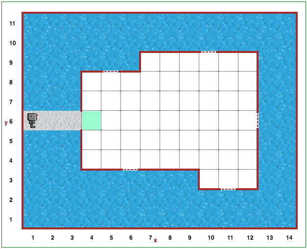

Šiame uždavinyje taip pat turėsite panaudoti daugelį ankstesniuose etapuose įgytų žinių. Gali būti, kad bus naudinga prisiminti 15 lygio sprendimą.
Atidarykite Robotuko aplinkos 20 lygį.
Robotukas turi vaikščioti po kambarį ir uždaryti langus naudodamas statyti_sieną() funkciją, tačiau šį kartą kambarys nebus stačiakampis. Kambario forma, dydis ir langų vieta visada keičiasi.
Kad galėtumėte pradėti spręsti šį uždavinį, panagrinėkite šį atvejį. Įsivaizduokite, kad Robotukas stovi prie sienos, žengia vieną žingsnį ir pamato, kad šalia jo nebėra sienos. Kas gali nutikti, jei Rėborgas žengs dar vieną žingsnį? Užuomina: galimi du atvejai.
Lygis 19: Kitas pasivaikščiojimas Turinys Testas 2: ciklai ir sąlygos